首先下載「小影」這個影片剪輯程式（亦可點此下載Android/Sony/Samsung版本的）
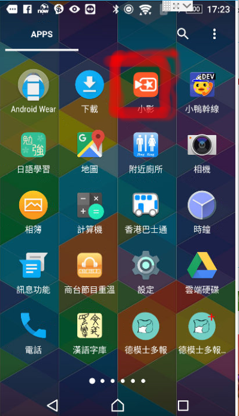然後打開這個「小影」（如紅圈示）
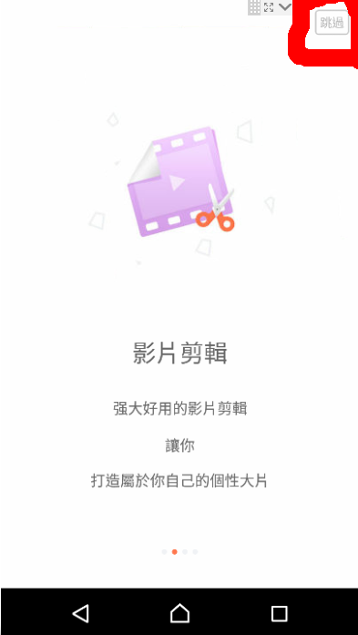第一次開啓會有簡介畫面，按右上角的「跳過」（紅圈）
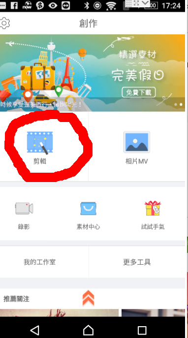選擇剪輯（紅圈內圖示）
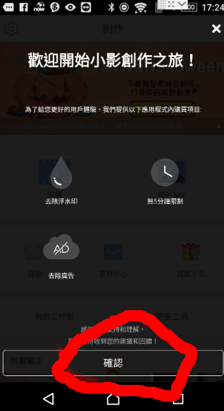第一次開啓會有簡介畫面，按「確定」（紅圈）
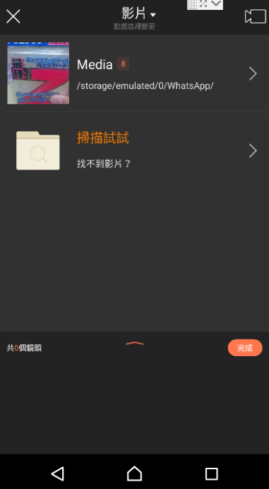 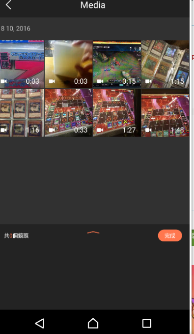選擇需要剪輯的影片，然後就會自動展開剪輯畫面
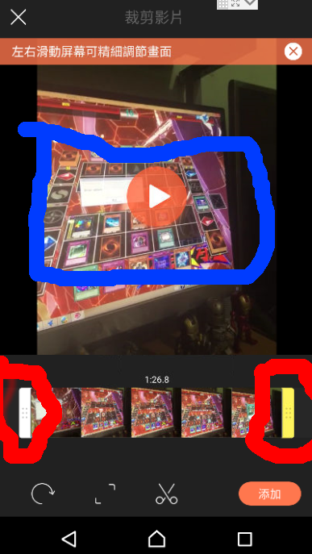拖動左右的拉桿（紅圈內的兩個）可以選擇保留的範圍，亦可在上方的「影片預覽」（藍圈）預覽成品會如何
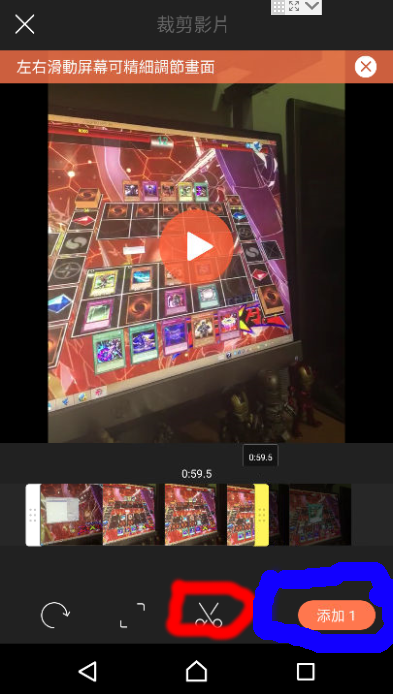選擇好後按下「剪刀圖示」（（紅圈）然後按下「添加」（藍圈）
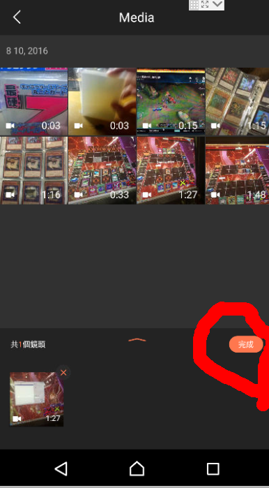按下「完成」（紅圈）
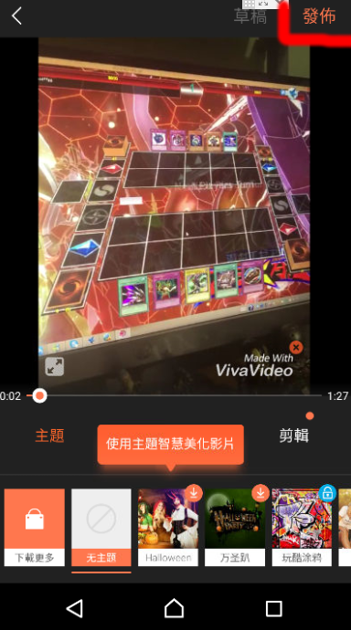按下「發佈」（紅圈）
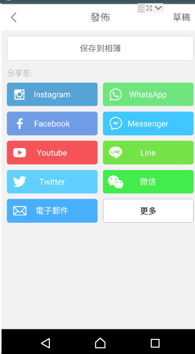之後就可以選擇你用的通信工具共享影片俾朋友仔了。